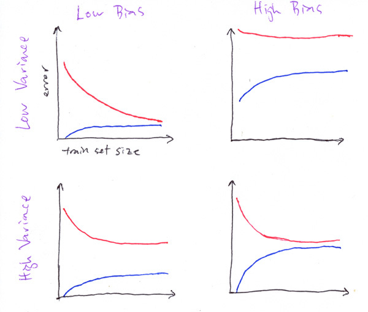

On this page
Machine Learning Training Program
Note that document with the shampooer and not the shampooe!
Below is a detailed syllabus by topic with questions and notes for each topic.
Most topics have a complementary mini-exercise. After covering the topics in the links below, make sure to complete the necessary mini-exercise for that topic.
All exercises should be completed in the provided Jupyter notebook.
The data for all exercises can be found here: https://drive.google.com/drive/folders/1hM7-LkPs8F97dNx1zQqpknPBnTACuoPa?usp=sharing
All required datasets are also provided.
Machine Learning Training Program
1. Supervised Learning and Discriminative Algorithms
Resources
Notes
Exercises
Questions
2. Model Evaluation and Selection
Resources
Notes
Exercises
Questions
3. Generative Algorithms
Resources
Notes
Exercises
Questions
4. Fundamental Algorithms
Resources
Notes
Exercises
Questions
5. Unsupervised Learning
Resources
Exercises
Questions
6. Visualizations
Supervised Learning Exercise: Kaggle Competition - Skip
Instructions
Notes
Project Expectations
1. Supervised Learning and Discriminative Algorithms
Resources
Read from CS229 Notes 1: Supervised Learning and Discriminative Algorithms
Supervised Learning
Part 1: Linear Regression
1. LMS Algorithm
3. Probabilistic Interpretation
Part 2: Classification and Logistic Regression
5. Logistic Regression
Notes
Nothing special that needs to be emphasized at this point.
Exercises
None for now
Questions
Since we are using the logistic function to transform a linear combination of the input into a non-linear output, how can logistic regression be considered a linear classifier?
Logistic regression is linear in the sense that the predictions can be written as
where
Thus the prediction can be written in terms of which is a linear function of . Also, for logistic regression, the decision boundary is linear: it is the solution to .Assume you trained a model. How would you define the importance of each feature?
They will most likely say that the coefficient measures importance.
Follow-up question: what would happen if you have correlated features?
Would correlated features affect the output of the Logistic Regression model? Why?
Yes. Let us consider the extreme case where we have two variables that are perfectly correlated.
Let’s say you want to use logistic regression to predict the probability of a car accident being fatal where one of the predictor variables will be speed, but for some reason you have two variables x = speed in km/h and y = speed in mph. Clearly, x and y are linearly dependent with x = 1.61y. In your model, you will estimate coefficients such that:
Due to the linear dependence, the relevant term on the right hand side can be written as . Now let’s say for some reason the speed actually has no influence on the fatality of the crash. Then you would expect your model to find that . However, due to the linear dependence, the model cannot distinguish between or or or any other combination where
Thus, on the one hand the model itself may become numerically unstable. On the other hand, you can no longer interpret the results correctly.
The same is true when variables are no longer linearly dependent but highly correlated (Think speed measurements in the same unit but from two distinct systems inside the car, such as x = speed in km/h measured by counting wheel rotations per second and y = speed in km/h measured using GPS. Then, due to measurement errors, we expect x and y to not be exactly the same, but very highly correlated. Let’s keep the assumption that the true coefficients should be 0. Then, again, looking at the entire input data set, the mode can hardly distinguish between any cases where
2. Model Evaluation and Selection
Resources
Overfitting/Underfitting, Bias, and Variance
Another (clearer) explanation - Chapter 8 Bias–Variance Tradeoff | R for Statistical Learning
Holdout Validation, Resampling, Bootstrapping
Model Selection and Cross Validation
Bonus: Statistical Tests
Evaluation Metrics: Lecture Slides
Topics: Precision, Recall, FAR, F-Score, Confusion Matrix, ROC Curve, PR Curve, AUC, AP (mAP)
Also, take a look at the metric summary written by the mador!
Feature Selection (CS229)
Notes
Currently no notes, welcome to add
Exercises
In the jupyter notebook, complete the sections on Linear Regression and Logistic Regression.
Questions
Overfitting/Underfitting, Bias, and Variance
What happens to the Bias and Variance if we only have a single model?
Since we only have a single sample for every prediction - the bias expectation value is simply the prediction itself and the variance is 0.
What is the Bias-Variance tradeoff?
It means that if we have a group of models, each one trained on a different split of the train set for example, and they overfit the training set (low bias) - they do not generalize very well, so the variance that they have on a new dataset (e.g. test) would be big.
Explain the following drawings - by stating in which ones there is a high\low bias and high\low variance.
(blue = train error, red = test error)

Answer: top-left - low bias and low variance, top-right - high bias and high variance, bottom-left - low bias high variance, bottom-right - high bias low variance.
Holdout Validation, Resampling, Bootstrapping
Leakage - Assume that we want to train an ML model for the following question:
We want to predict whether a member of a certain football team can win the league, we solve the problem by building features for every group separately and we want to evaluate our train-validation performance.
How would you divide the dataset into train and test?
What could be the problem with using a simple random sampling? (i.e. on the samples s.t. Members of the same team can be in the train and test)
In k-fold cross-validation, explain the tradeoff between large and small k
Assuming we have a very uneven dataset with a lot of negative samples and very few positives, how can we split our train-validation in order to get good performance?
We want to keep as many positive samples in the test in order to avoid pessimistic bias, so we can use leave-1-out validation for the positive samples and sample the negatives in a way that will keep the original distribution ratio (not necessary).
What are the advantages of bootstrap compared to hold-out and cross validation?
What is the difference between bootstrapping and cross-validation?
3. Generative Algorithms
Resources
Read CS229 Notes 2: Generative Algorithms
Notes
Currently no notes, welcome to add
Exercises
In the jupyter notebook, complete the section on Naive Bayes
Questions
Currently no questions, welcome to add
4. Fundamental Algorithms
This chapter will overview the standard algorithms used in ML
Resources
KNN
Read Lecture Notes (University of Wisconsin STAT479)
Also touches on computational complexity, data structures, and the curse of dimensionality
SVM
Read CS229 Lecture Notes (Up to Section 9)
Don’t get stuck too much on the math.
Trees and Ensembles
Read Decision Trees
Read Ensembling (Random Forests, Boosting, Bagging, Stacking)
Notes
Currently no notes, welcome to add
Exercises
In the jupyter notebook, complete the sections on KNN, SVM, Trees, and Ensembles.
Questions
Currently no questions, welcome to add
5. Unsupervised Learning
Resources
Read Principal Component Analysis
Read Clustering Algorithms Blog
Read on GMM and EM
Read the following Distill post on TSNE
Read the following post on UMAP
Notes
Currently no notes, welcome to add
Exercises
In the jupyter notebook, complete the sections on PCA and Clustering.
Questions
Currently no questions, welcome to add
6. Visualizations
Go over the different notebooks in the following Visualizations with Seaborn tutorial
After completing the notebooks, complete the final exercise notebook (07-Seaborn Exercises.ipynb)
Don’t look at the solutions! :)
Supervised Learning Exercise: Kaggle Competition - Skip
Instructions
You will be given a few days (depending on the time constraint) to complete as much as possible in a Kaggle competition.
For the most part, you will be free to complete the task in whatever way you see fit. However, below we have listed some expectations we expect to see in your final result.
Every day we will meet with you to answer any questions that arise and discuss your progress and plan.
At the end of the project, you will be asked to present your work.
Most Kaggle competitions span several months. Therefore, we do not expect you to have a finished project after one week. Therefore, when presenting your work, discuss directions for the next steps.
The competition can be found in the following link: Shelter Animal Outcomes
Task: predict the outcome of the animal as they leave the Animal Center (Adoption, Died, Euthanasia, Return to owner, and Transfer.)
Problem Type: multi-class classification
Evaluation: Multi-class logarithmic loss
Notes
All of these are kaggle competitions, meaning there are many notebooks available. You are allowed to explore these notebooks, but if you do, please do so reasonably.
You can complete the project in whatever IDE you wish (e.g., PyCharm / Jupyter Notebook).
However, keep in mind you are expected to output nice visualizations.
One of the most important skills that we will look for is creating insightful visualizations! Make sure you invest time in creating interesting visualizations!
Project Expectations
Data Exploration
Output graphs that provide insight to your dataset, not just graphs that look nice.
Data Cleaning / Feature Extraction
Clean your data! For example, handling missing values, handling categorical data, etc.
Determine which features are relevant to solving your task and which features may/should be removed.
Model Exploration
Test various models / parameters and compare their performance on their dataset
Compare the different models. Are you able to explain why a particular model performs better than a different model?
Analyze the results / False analysis
Where is the model successful/unsuccessful?
Which features are most significant?
Future directions
What are your next steps?
What can be done to improve the model?